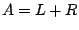
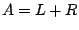
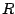
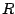

Consider iteratively solving a
linear system
 ,
with invertible
and
, by splitting the matrix
,
with invertible
and
, by splitting the matrix  as
, where
as
, where  and  are both readily invertible. In such a case the
recently introduced residual minimizing Krylov subspace
method [1] can be executed, allowing, in a certain
sense, preconditioning simultaneously with
and  are both readily invertible. In such a case the
recently introduced residual minimizing Krylov subspace
method [1] can be executed, allowing, in a certain
sense, preconditioning simultaneously with  and .
and .
Splittings satisfying result either form the
structure of the problem, or are algebraic. Splittings of
Gauss-Seidel type belong to the latter category. In this
talk we discuss such splittings of  .
.
[1] M. Huhtanen and O. Nevanlinna,
A minimum residual algorithm for
solving linear systems,
submitted manuscript available at
www.math.hut.fi/~mhuhtane/index.html.